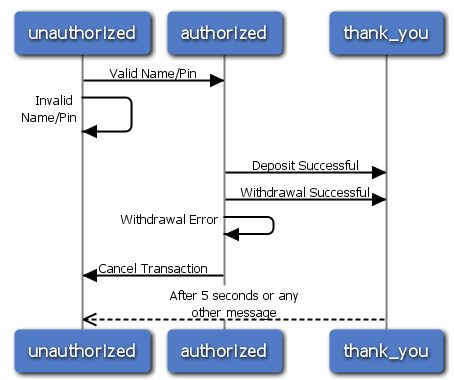

This is the second article in my Erlang/OTP introduction series. If you haven’t yet, I recommend you read the first article which talks about gen_server and lays the foundation for our bank system before moving onto this article. That being said, if you’re a quick learner, you can look at the completed server file and continue from there.
The Scenario: We delivered ErlyBank’s server to them and they were very pleased. But this is the 21st century so they also need a secure and easy to use ATM system, so they’ve asked that we extend the server and also create their ATM backend. User accounts are to be protected with a four-digit PIN. From the ATM you should be able to log in to a previously existing account, and deposit or withdraw funds. There is no need to create a pretty user interface on top of the ATM backend, they have another team doing that.
The Result: First, we’ll extend the server software to hold a PIN for accounts, and add an authorization call to it. Then, we’ll use gen_fsm to create the ATM backend. We’ll rely on the server to do all the data validation.
As always, click read more to get started, if you haven’t already…
What is gen_fsm?
gen_fsm is another Erlang/OTP behavior module, and is used for implementing finite state machines.
I apologize in advance, since in this article “state” will be used to reference two different things:
- gen_fsm state - The state of a finite state machine, this is the current “mode” its in. It has nothing to do with the state you learned about with gen_server.
- state data - The state data of the server, this is the same as the state you learned about with gen_server.
A bit confusing, I know, but I will do my best to only refer to them with the above terms.
A gen_fsm starts in a state, and any calls/casts made to it are
received by a special callback method which is the named the same as the
state the gen_fsm module is in. Based on an action, the module can
change states. A textbook example of a finite state machine is a locked
door. The door starts in the state of “locked.” It requires four digits
to be unlocked. After entering a single digit, the door stores it, but
it needs more digits, and waits, still “locked.” After entering four
digits, if they are correct, the door changes state to “unlocked” for a
period of time. If the digits are incorrect, it remains “locked” and
clears its memory. You’re probably getting an idea now of how we’re
going to implement an ATM using gen_fsm now 
As I did with gen_server, here is the list of callbacks we need to implement for gen_fsm. You’ll notice many of them are similar to gen_server:
- init/1 - Initializers the server. Almost identical to gen_server.
- StateName/2 - In this case, StateName actually will be replaced with a state name. This is called when a message is sent to the server; an action occurs on the finite state machine. This is an asynchronous callback.
- handle_event/3 - Similar to StateName/2, except that this is sent no matter what state you’re in, when the client calls gen_fsm:send_all_state_event. Again, this is asynchronous.
- StateName/3 - Equivalent to StateName/2 except this is the synchronous version. The client waits for a response from the server before continuing.
- handle_sync_event/4 - Equivalent to handle_event/3 except this is the synchronous version.
- handle_info/3 - Equivalent to gen_server’s handle_info. This receives all messages which weren’t sending using a standard gen_fsm command. This can include timeout messages, process exit messages, or any messages sent manually with the “!” symbol to the server process.
- terminate/3 - Called when the server is terminating so you can clean up any resources.
- code_change/4 - Called when a real-time system upgrade of the server is occuring. We won’t deal with this in this article, but it will be used extensively in a future article.
The gen_fsm Skeleton
Just like with gen_server, I start off every finite state machine with a generic skeleton. The gen_fsm skeleton can be viewed here.
There should be nothing out of the ordinary there. The start_link method looks just like the gen_server one did.  Save that skeleton as eb_atm.erl Now we’re ready to start going!
Save that skeleton as eb_atm.erl Now we’re ready to start going!
Extending eb_server to do Account Authorization
This is again one of those tasks which I feel comfortable allowing you to do on your own. The following are the changes we need to make:
- Account creation should require a PIN now, which will be stored with the account, unencrypted.
- Add an authorize/2 method, where the arguments are Name and PIN. The return values should be ok or {error, Reason}.
Also, it would be a good idea to require the PIN, or some sort of
authorization token with every request to deposit or withdraw money, but
in order to save time, and since ErlyBank is fake (breaks my heart  hah!), we will not do this.
hah!), we will not do this.
To be honest, this isn’t really a quick-fix, but if you’re learning Erlang now on your own, you must be pretty smart  So I think you can do it! Be sure to test your changes before moving on, or at least compare them to the answer linked below.
So I think you can do it! Be sure to test your changes before moving on, or at least compare them to the answer linked below.
After implementing the above changes, your eb_server.erl should look like this. Note that the messages you send to the server may be different, and that is okay. Programmers think differently. The important thing is that the API outputs the same data, correctly.
ATM Design Strategy
I’m going to quick a take coding break to explain the plan for this ATM system. We’re going to implement it following the flow chart below:

The three blue boxes represent the different states the server will be in. The arrows represent what actions are necessary to switch to those states.
Initializing gen_fsm
To start the ATM, we use the same start_link method as a gen_server. But initialization is a little bit different.
init([]) ->
{ok, unauthorized, nobody}.
The init/1 method of a gen_fsm is expected to return {ok, StateName, StateData}. StateName is the initial state of the server, and state data is the initial data of the server. In the case of ErlyBank’s ATM, we start out in the unauthorized state, and the data is set to nobody. The state data will be the account name we’ll be dealing with, so initially its nothing. Erlang has no null/nil/nothing data type, and a descriptive atom is usually used instead, like this one.
Account Authorization
We now need to implement the authorization API for the ATM. First, the API definition:
authorize(Name, PIN) -> gen_fsm:sync_send_event(?SERVER, {authorize, Name, PIN}).
The sync_send_event method is equivalent to the call method of gen_server. It sends the message, the second argument, to the current state of the server represented with the first argument. So now we have to write a handler for the message:
unauthorized({authorize, Name, Pin}, _From, State) -> case eb_server:authorize(Name, Pin) of ok -> {reply, ok, authorized, Name}; {error, Reason} -> {reply, {error, Reason}, unauthorized, State} end; unauthorized(_Event, _From, State) -> Reply = {error, invalid_message}, {reply, Reply, unauthorized, State}.
This should read pretty logically as well. The function is named unauthorized because that is the state we expect the message to be received at. We then write a matcher to match the tuple {authorize, Name, Pin}. We then use the API methods exported by the server we wrote to authorize the user.
If the account and PIN are valid, we send the response ok back to the client. The format of the response is {reply, Response, NewStateName, NewStateData}. Following that format, we’ve changed states to authorized and for the data we store the account name.
If the account information was invalid, we respond with the error and reason and stay in the same state with the same state data.
Finally, we implement another catch-all function at the end. You should do this throughout functional programming environments but it is especially important here, since different states might be receiving actions meant for other states. For example, what if, for some reason, someone attempts to deposit while we’re still unauthenticated? We need a catch all to send back an invalid message error. This is what we do here.
Deposits
Once we’re authorized, a user is going to either deposit or withdraw
from his or her bank account. We’re going to implement deposits using an
asynchronous call to the server. Again, this is a bit
insecure, since we’re not verifying the deposit was actually successful,
but since this is a fake bank, and an ATM prototype at best, I am
letting this slip. 
First, the API!
%%-------------------------------------------------------------------- %% Function: deposit(Amount) -> ok %% Description: Deposits a certain amount in the currently authorized %% account. %%-------------------------------------------------------------------- deposit(Amount) -> gen_fsm:send_event(?SERVER, {deposit, Amount}).
Simple, and this time we use the send_event/2 method instead of sync_send_event. This sends an asynchronous call to the server. Now the handling part…
authorized({deposit, Amount}, State) -> eb_server:deposit(State, Amount), {next_state, thank_you, State, 5000}; authorized(_Event, State) -> {next_state, authorized, State}.
Again, very simple. The method actual just forwards the information to the eb_server deposit API we wrote, which will do all the validation. But there is something strange in the return value of the deposit method! Not only does the state change to thank_you, but there is this odd “5000″ at the end there. That is actually a timeout. If no message is received in 5000 milliseconds (or 5 seconds), then a timeout message is sent to the current state. Which leads us to our next topic…
The Short “Thank You!” State
Anyone (everyone?) who has gone to an ATM knows that after you’re done banking, there is a short “Thank You” screen that shows up for a little while. And although this really shouldn’t be implemented in the back end, I wanted to show off the timeout feature of gen_fsm. After 5000 milliseconds, or if any other message is received, I swap the state back over to “unauthorized” so the ATM can start over again for the next customer. Here is the code:
thank_you(timeout, _State) -> {next_state, unauthorized, nobody}; thank_you(_Event, _State) -> {next_state, unauthorized, nobody}.
Note: The trained eye will note that both methods are equal, and its unnecessary to have the first matcher. This is true, and I just included the first matcher to be explicit about catching the timeout.
Here is the complete eb_atm.erl up to this point.
Withdrawals
Again, I will be leaving withdrawals as an exercise to the reader.
You can implement it any way you’d like! Just make sure it actually does
withdraw from the account 
Here is my eb_atm.erl after implementing withdrawals. Note that successful withdrawals transition to the thank_you state with the timeout in place.
A Cancel-No-Matter-What Button
One of my biggest gripes of many machines is that there isn’t a big “Cancel” button that cancels everything you have been doing. And though I’ve found that killing the power to a machine does this cancel functionality quite nicely, this isn’t an option for people at an ATM. So let’s implement a giant cancel method which cancels the transaction, no matter what state it is in.
How would you do this? Well, using only the knowledge of this article, I would guess that you’d put a cancel API method which sends a cancel message to the event. Then in each event you can handle this and go back to the unauthorized state.
Witty, but not correct, by no fault of your own! I didn’t mention (or I did extremely briefly, you probably missed it) that there is a method gen_fsm:send_all_state_event/2 which sends a message, regardless of what state the server is in. We will use this, to keep our code DRY.
Our API:
%%-------------------------------------------------------------------- %% Function: cancel/0 %% Description: Cancels the ATM transaction no matter what state. %%-------------------------------------------------------------------- cancel() -> gen_fsm:send_all_state_event(?SERVER, cancel).
This event is sent to the handle_event/3 method, which we extend below:
handle_event(cancel, _StateName, _State) -> {next_state, unauthorized, nobody}; handle_event(_Event, StateName, State) -> {next_state, StateName, State}.
If we receive the cancel message, the server resets the state to unauthorized and the state data to nobody: a fresh ATM!
As always, the current complete state of eb_atm.erl can be viewed here.
Final Notes
In this article, I showed you how to create a basic ATM system using gen_fsm. I showed you how to handle messages in a given state, change states, change states with timeouts, and send-to-all messages, among other things.
There are some warts in the system though, and I leave it to you to fix them. Here are two exercises for you to do, if you wish. Trust me, you have the ability:
- Add error checking to deposits. Make it return {error, Reason} and {ok, Balance} instead of just “ok” all the time.
- Add a “check my balance” function to the ATM. This should only be available while authorized, and should not end the transaction. This means that it should not send the user to the thank_you state. This is so that after seeing their balance, the user can withdraw/deposit if necessary.
These two features of the exercise won’t be used in future articles,
and as such I won’t post the answers here. You can test them yourself to
make sure they work! 
Part two of this Erlang/OTP series is over. The third article is
already in the pipeline and will be published in another few days. It
will cover gen_event. For fun, you can think what I’ll be adding to ErlyBank using this! 
I hope you have been enjoying these introductions to Erlang/OTP as much as I’ve enjoyed writing them. Thanks for all the support, and good luck!


Wow, you keep putting out great blog posts! gen_fsm is definitely something that’s not documented well anywhere. Keep up the great work!
Mitchell, you’re doing an excellent work, really!
Intro to gen_fsm and gen_server…
Emacs…
These are nice intro’s. A bit of a review for me but your writing style is enjoyable to read and you hit the sweetspot between “too simplistic” and “overwhelming detail”.
The skeletons are nice too.
Mitchell,
My compliments on an outstanding series of posts. Let me ask a question concerning the relationship between this post’s authorization mechanism and the previous post’s bank account mechanism. I’m trying to understand the big picture here.
Imagine a potential bad guy is trying to make an unauthorized withdrawal. The security mechanism as illustrated works if the bad guy uses eb_atm:authorize/2 and eb_atm:authorize/1 API. On the other hand, the bad guy could just call eb_server:withdraw/2 and make off with the goods.
I understand the system as written is a prototype for didactic purposes. What I am wondering is how one would go about locking it down (I have not read ahead in the series, maybe you address this later). My guess is that one would not register the name of eb_server, and instead allow access to it only by its PID, and then take care that only eb_atm and other authorized processes had access to that PID. Is this the correct approach?
David
Mitchell,
I hope you won’t mind another question. I’m trying to understand the concurrency aspects of your example, and also trying to understand the role of the State parameter.
As you pointed out, there is an unfortunate overloading of the concept of state in gen_fsm. A finite state automaton has a set of transition states (T-states). In your example these are the states {unauthorized, authorized, thank_you}. In gen_fsm there is another concept of state, a piece of data which I’ll call a D-state. The starting state of eb_atm is the pair of {T-state, D-state} == {unauthorized, nobody}.
Suppose a user called “Joe” authenticates. The machine state goes from {unauthorized, nobody} to {authorized, “Joe”}. Joe is standing at the ATM trying to make up his mind about how much money to withdraw, maybe calling his wife to ask her. What is happening to incoming authentication messages from other users?
It looks to me like every clause which handles messages while eb_atm is in the “authorized” T-state requires the message to provide a D-state parameter matching “Joe”. Presumably that match does not occur, or authentication is broken. Does this mean the messages are piling up in the process mailbox? If so, isn’t the whole authentication mechanism in effect blocking while Joe goes about his business?
Thanks,
David
Hi David,
Great questions! Really great! I’ll answer them one at a time… So to answer your first question: I don’t quite remember (and it’s far too early for my lazy self to look ) if I mentioned it in this article or the last, but I did mention this
security issue. There are a number of ways to solve it. Your idea about
not registering the server is one option, but then assuming the
malicious user has access to the system, there are always easy ways to
look up the PID of a running process.
) if I mentioned it in this article or the last, but I did mention this
security issue. There are a number of ways to solve it. Your idea about
not registering the server is one option, but then assuming the
malicious user has access to the system, there are always easy ways to
look up the PID of a running process.  The solution I would use would be to return a session hash after
calling eb_server:authorize. The server would maintain a hashmap to map a
hash to a given account. In subsequent withdrawal/deposit methods,
eb_server would require the hash be sent in instead of the account name.
Additionally, hashes should expire after a set amount of time. This is
pretty basic security, not at all meant for a true to life bank
application. I don’t want anyone to think that I’ve ever actually meant
for this to be a very secure application, as its just meant to show off
the features of OTP.
The solution I would use would be to return a session hash after
calling eb_server:authorize. The server would maintain a hashmap to map a
hash to a given account. In subsequent withdrawal/deposit methods,
eb_server would require the hash be sent in instead of the account name.
Additionally, hashes should expire after a set amount of time. This is
pretty basic security, not at all meant for a true to life bank
application. I don’t want anyone to think that I’ve ever actually meant
for this to be a very secure application, as its just meant to show off
the features of OTP. 
To answer your second question: I’m only thinking of one ATM terminal in this example, but I do fail to mention that. If there are multiple ATM terminals then the gen_fsm would have to exist in multiple running processes: one for each terminal. I would do this by creating an “ATM server” for lack of better words. When each ATM terminal boots up, it’d register itself with the server, and the server would spawn off a process of eb_atm (not registered), and return the PID to the calling ATM terminal. Then, the terminal can send all requests to this PID. Using this method, it is very easy to add and remove multiple ATM terminals without changes to the code.
Hopefully my answers were straightforward enough… the two issues you brought up are very insightful but also not truly meant for the beginner-scope of this series. But I enjoy discussing them, so feel free to ask any more
Mitchell
Thank, Mitchell, I will keep asking questions! I am not a total beginner at Erlang, but I have never gotten to use it professionally, only some late night dabbling when the kids are asleep. I want to get my head around OTP, and have found there is a severe lack of approachable, simple examples out there, especially of parts other than gen_server. Your gen_fsm example was most appreciated. I look forward to the rest of your series.
I had in mind one bank, one ATM server, and many ATM terminals. Your suggestion of one ATM per ATM terminal makes perfect sense.
I have not had a chance to comment up until now, but now that I do…
This is a brilliant series. It is really helping me dig in on OTP. I think I have had a pretty solid grasp of Erlang the language for, but my grasp of Erlang/OTP as a platform was much less solid. Through articles provide a really good launch point for getting “over the hump” between knowing Erlang and knowing Erlang/OTP. Thanks
Going back to the multiple FSMs idea from David C: lets say I have a system where I have thousands of live transactions and each one only lives for a few seconds. The nature of each transaction is an FSM, so using gen_fsm makes sense. Like the ATMs, each transaction has its own state so I’d need thousands of little servers. Does it make sense that I spawn a new gen_fsm server for each transaction, or should I use some kind of static pool of available servers?
David,
From what I’ve found, when in doubt, just spawn a new process Erlang processes are extremely lightweight and spawn extremely fast.
But under extremely heavy traffic, OTP can get a bit heavy. From what
I’ve experienced, however, its better to just stick to the standards
rather than grow-your-own solution. After hitting the OTP “limit” I
would scale horizontally by distributed your Erlang application rather
than worry about rewriting the whole thing w/o OTP.
Erlang processes are extremely lightweight and spawn extremely fast.
But under extremely heavy traffic, OTP can get a bit heavy. From what
I’ve experienced, however, its better to just stick to the standards
rather than grow-your-own solution. After hitting the OTP “limit” I
would scale horizontally by distributed your Erlang application rather
than worry about rewriting the whole thing w/o OTP.
Mitchell
Hello,
Unusual question, but what did you use to draw your sequence diagram?
Thanks!
Mitchell,
What are you using for your syntax highlighting?
Simple, concise easy to understand article.
Thank you